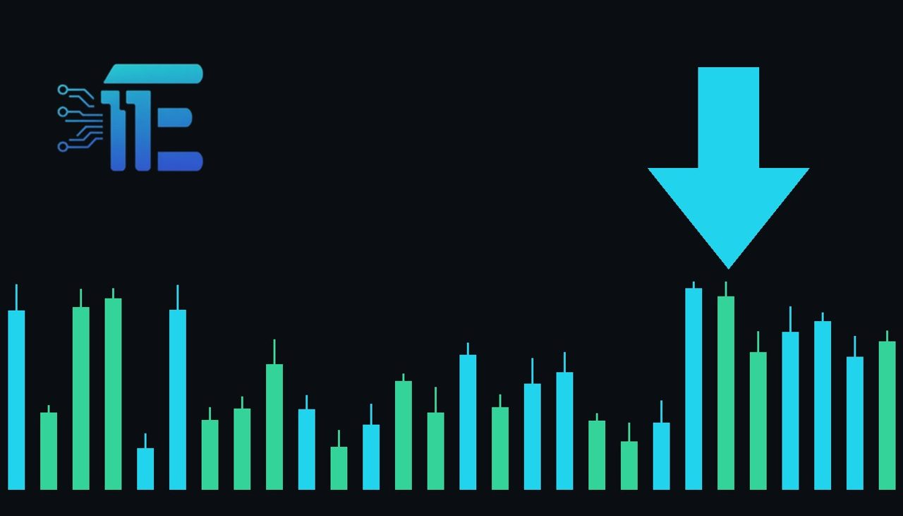

Waller Signals Fed May Need Half-Point Rate Hike ShockWaller បង្ហាញសញ្ញាថា Fed អាចត្រូវការដំឡើងអត្រាការប្រាក់ 0.50% យ៉ាងភ្ញាក់ផ្អើល
XAU/USD impact: ▼ Bearishផលប៉ះពាល់លើ XAU/USD: ▼ ធ្លាក់

Fed Governor Waller warned the central bank may need to surprise markets with a half-point rate hike as inflation persists above 2%. An aggressive move would typically lift yields and the dollar, weighing on gold.
លោក Waller ទេសាភិបាល Fed បានព្រមានថា ធនាគារកណ្តាល អាចនឹងត្រូវធ្វើឱ្យទីផ្សារភ្ញាក់ផ្អើលជាមួយនឹងការដំឡើងអត្រាការប្រាក់ 0.50% ខណៈដែលអតិផរណានៅតែលើសគោលដៅ 2%។ ជំហានដ៏តឹងរ៉ឹងបែបនេះជាទូទៅជំរុញឱ្យទិន្នផលសញ្ញាបណ្ណ និងប្រាក់ដុល្លារអាមេរិកឡើងថ្លៃ ដែលដាក់សម្ពាធលើតម្លៃមាស។
Federal Reserve Governor Christopher Waller indicated that the central bank may need to deliver a half-point interest rate hike to shock market participants. He noted that inflation remaining persistently above the Fed's 2% target is driving policymakers into an increasingly aggressive monetary policy stance to restore price stability.
ទេសាភិបាល Fed លោក Christopher Waller បានបញ្ជាក់ថា ធនាគារកណ្តាល អាចនឹងចាំបាច់ត្រូវដំឡើងអត្រាការប្រាក់ចំនួន 0.50% ដើម្បីធ្វើឱ្យអ្នកចូលរួមទីផ្សារមានការភ្ញាក់ផ្អើល។ លោកបានកត់សម្គាល់ថា អតិផរណាដែលបន្តស្ថិតនៅខ្ពស់ជាងគោលដៅ 2% របស់ Fed កំពុងជំរុញឱ្យក្រុមមន្ត្រីគោលនយោបាយឈានទៅរកជំហរដ៏តឹងរ៉ឹងនិងខ្លាំងក្លាជាងមុន ដើម្បីស្តារស្ថិរភាពថ្លៃទំនិញឡើងវិញ។
This hawkish rhetoric connects directly to the valuation of gold (XAU/USD) through sovereign yields and currency valuations. When policymakers deliberate over accelerated rate adjustments, benchmark yields generally rise across the curve. Higher interest rates increase the opportunity cost of holding physical gold, an asset that generates no regular coupon or dividend yield. Concurrently, aggressive policy tightening tends to bolster the US dollar, which often dampens global demand for bullion priced in USD.
ការលើកឡើងអំពីលទ្ធភាពនៃការដំឡើងអត្រាការប្រាក់ក្នុងកម្រិតធំនេះ មានទំនាក់ទំនងផ្ទាល់ទៅនឹងតម្លៃមាស (XAU/USD) តាមរយៈទិន្នផលសញ្ញាបណ្ណរដ្ឋាភិបាល និងតម្លៃរូបិយប័ណ្ណ។ នៅពេលមន្ត្រីគោលនយោបាយពិចារណាលើការដំឡើងអត្រាការប្រាក់កាន់តែលឿន ទិន្នផលគោលជាទូទៅកើនឡើង។ អត្រាការប្រាក់កាន់តែខ្ពស់ បង្កើនថ្លៃដើមឱកាសនៃការកាន់កាប់មាស ដែលជាទ្រព្យសកម្មមិនផ្តល់ទិន្នផលការប្រាក់។ ជាមួយគ្នានេះ ការរឹតបន្តឹងគោលនយោបាយរូបិយវត្ថុជាញឹកញាប់ជួយពង្រឹងកម្លាំងប្រាក់ដុល្លារអាមេរិក ដែលកាត់បន្ថយតម្រូវការទិញមាសគិតជា USD ពីទីផ្សារសកល។
From an analytical perspective, market dynamics will pivot on subsequent policy execution. If persistent inflation pressures drive the central bank to follow through with a half-point rate hike, the combination of elevated borrowing costs and a robust dollar would likely maintain downward pressure on gold. On the other hand, if elevated inflation readings spur fresh demand for tangible wealth preservation, or if market anxiety mounts over tighter financial conditions, gold could find structural buying support.
ពីទស្សនៈវិភាគ ចលនាទីផ្សារនឹងអាស្រ័យលើការអនុវត្តគោលនយោបាយជាបន្តបន្ទាប់។ ប្រសិនបើសម្ពាធអតិផរណានៅតែរ៉ាំរ៉ៃរហូតរុញច្រានឱ្យធនាគារកណ្តាល សម្រេចដំឡើងអត្រាការប្រាក់ 0.50% មែននោះ ការកើនឡើងនៃការចំណាយលើការខ្ចីប្រាក់ និងភាពរឹងមាំនៃប្រាក់ដុល្លារអាមេរិក នឹងបន្តដាក់សម្ពាធធ្លាក់ចុះមកលើមាស។ ផ្ទុយទៅវិញ ប្រសិនបើកម្រិតអតិផរណាខ្ពស់ជំរុញឱ្យមានតម្រូវការការពារតម្លៃទ្រព្យសម្បត្តិឡើងវិញ ឬប្រសិនបើការព្រួយបារម្ភក្នុងទីផ្សារកើនឡើងជុំវិញលក្ខខណ្ឌហិរញ្ញវត្ថុតឹងតែង តម្លៃមាសអាចនឹងទទួលបានការគាំទ្រពីកម្លាំងទិញ។
Moving forward, market participants and traders should watch upcoming macroeconomic releases and follow-up statements from other central bank officials to see if consensus builds around Waller's aggressive stance. Any sharp adjustments in US dollar strength or government bond yields will be essential signals for assessing the near-term trajectory of XAU/USD.
សម្រាប់ពេលខាងមុខ អ្នកចូលរួមទីផ្សារ និងអ្នកជួញដូរ គួរតែតាមដានយ៉ាងដិតដល់នូវទិន្នន័យសេដ្ឋកិច្ច និងសេចក្តីថ្លែងការណ៍បន្តបន្ទាប់ពីមន្ត្រីធនាគារកណ្តាល ដើម្បីដឹងថាតើមានការគាំទ្រទូលំទូលាយចំពោះជំហរតឹងរ៉ឹងរបស់លោក Waller ដែរឬទេ។ ការប្រែប្រួលយ៉ាងគំហុកនៃកម្លាំងប្រាក់ដុល្លារអាមេរិក និងទិន្នផលសញ្ញាបណ្ណរតនាគារ នឹងក្លាយជាសញ្ញាសំខាន់ក្នុងការកំណត់ទិសដៅរយៈពេលខ្លីនៃ XAU/USD។
Key takeawaysចំណុចសំខាន់ៗ
- Fed's Waller noted the central bank may need a half-point rate increase to shock markets.
- លោក Waller មកពី Fed បានលើកឡើងថា ធនាគារកណ្តាល អាចត្រូវការដំឡើងអត្រាការប្រាក់ 0.50% ដើម្បីដាស់តឿនទីផ្សារ។
- Persistent inflation above the 2% target is driving officials toward an aggressive stance.
- អតិផរណាដែលបន្តលើសគោលដៅ 2% កំពុងរុញច្រានក្រុមមន្ត្រីឱ្យប្រកាន់យកជំហរគោលនយោបាយតឹងរ៉ឹងជាងមុន។
- Higher rate expectations bolster the US dollar and yields, dampening non-yielding gold demand.
- ការរំពឹងទុកលើការដំឡើងអត្រាការប្រាក់ខ្ពស់ជួយពង្រឹងប្រាក់ដុល្លារអាមេរិក និងទិន្នផលសញ្ញាបណ្ណ ដែលដាក់សម្ពាធលើមាស។
Original commentary by THE MARKET CODE, based on public reporting from Finance. Written with the help of AI. Educational only, not financial advice.
មតិវិភាគដើមដោយ THE MARKET CODE ផ្អែកលើការរាយការណ៍សាធារណៈពី Finance។ សរសេរដោយមានជំនួយពី AI។ មាតិកាអប់រំប៉ុណ្ណោះ មិនមែនជាដំបូន្មានហិរញ្ញវត្ថុទេ។